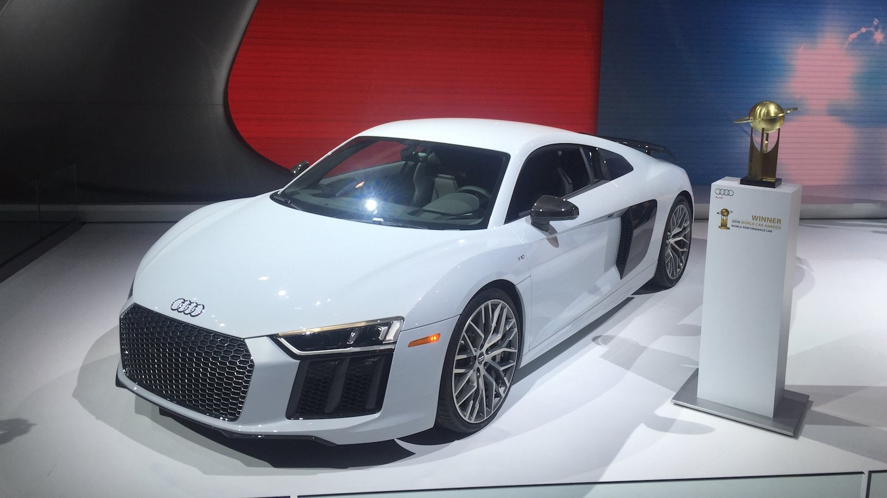

Le concept Audi Space Frame (ASF) est une innovation Audi : l’ossature totale (Audi A2 et A8) ou partielle (Audi TT et R8)
de l’automobile est fabriquée avec de l’aluminium seul ou allié à de l’acier. La rigidité de ce type de coque
est supérieure à l’équivalent en acier et permet une meilleure tenue de route ainsi qu'une meilleure absorption des chocs
lors de crash tests. D’autre part, le gain de poids est de l’ordre de 25 %.
Audi reçoit le « Titre européen de l'inventeur de l'année 2008 » pour la conception de l’ASF.
Architecture 48v
Audi équipera son futur haut de gamme d’une architecture électrique 48V. Cette technologie déjà présente sur le SQ7 TDI,
permet d’alimenter un compresseur électrique pour assurer un couple important à bas régime, mais aussi des barres
stabilisatrices électromécaniques pour améliorer le comportement routier. le but de cette architecture est de baisser
les consommations, jusqu’à 0,7 l/100 km (selon le cycle NEDC) avec un moteur à essence. Le moteur (V6 3.0 TFSI) est
épaulé par un alterno-démarreur, refroidi par eau, qui peut développer sur le moteur jusqu’à
160 Nm grâce à un réducteur (60 Nm en sortie d’alternateur). Un couple confortable lors des phases de démarrage.
Lors des décélérations, il est aussi capable d’alimenter la batterie lithium-ion d’une capacité de 10 Ah. En plus de l’aide au démarrage, l’auto bénéficie de la fonction roue libre. Ainsi, le moteur peut être coupé entre 30 et 160 km/h pendant une durée maximale de 45 secondes. Par ailleurs, lors des phases de Stop&Start, le moteur se coupe dès que la vitesse est inférieure ou égale à 22 km/h.
Pour le rendre encore plus efficace, le système prend en compte les données de la navigation (dénivelé, courbe…) mais aussi celles de la caméra frontale.
L’Audi A8 inaugurera une nouvelle technologie. Baptisée eROT (electromechanical rotary), ce système transforme les oscillations de la suspension en énergie électrique. Aujourd’hui, l’énergie cinétique due aux bosses, trous, et autres irrégularités de la chaussée est transformée en chaleur.
Avec l’eROT, les amortisseurs hydrauliques sont remplacés par des modèles rotatifs électromécaniques. L’énergie absorbée permet d’alimenter la batterie lithium-ion. En moyenne, la récupération est de l’ordre de 100/150 watts sur une route en bon état mais peut atteindre
613 watts sur un revêtement particulièrement dégradé. Le gain de consommation peut atteindre 0,2 l/100 km.
En plus du gain de place, cette technologie s’apparente à un amortissement piloté. Chaque « amortisseur » peut-être géré individuellement pour ajuster le niveau d’absorption au mode ou au style de conduite.
Toutes les Audi A8 (V6, V8 et W12) bénéficieront de l’architecture 48V.
Caractéristiques Générales
Traction intégrale Quattro d'Audi
Créée en 1980, la traction intégrale d'Audi est l'une des meilleures dans sa catégorie.
Respectés, les utilisateurs sont ravis de l'avoir lorsque la route et les conditions météorologiques ne sont pas clémentes.
De plus, cela ne se limite pas à la sécurité, mais permet aussi de traverser aisément des sentiers hors route et
des endroits peu accessibles.
Audi préconise maintenant la technologie Quattro Ultra dans la majorité de ses véhicules. Celui-ci permet de moduler
instantanément la répartition de la puissance lorsque l'état de la route se dégrade.
Cette technologie vous offre une adhérence à la route plus qu'exceptionnelle surtout avec nos hivers québécois.
Cockpit virtuel et tableaux de bord
Audi est un leader dans plusieurs sphères de l'industrie automobile. L'innovation technologique et l'interface
utilisateur n'y font pas exception.
En effet, dans la majorité des modèles d'aujourd'hui et des années précédentes, nous retrouvons un vaste éventail
de gadgets et de tableaux de bord.
L'expérience à bord est particulièrement agréable grâce aux commandes faciles d'utilisation telles que celles du chauffage,
du système de son et des commandes au volant, ainsi que grâce au fameux système multimédia MMI (Multimedia Infotainment).
Garant de plusieurs victoires au niveau du meilleur cockpit en raison de son aspect immersif,
Audi s'assure que tous les besoins du conducteur sont comblés et à la portée de la main.
Berline Audi A4 2018
Style qui perdure dans le temps
Ne nous le cachons pas, les Audi ont une apparence qui fait tourner les têtes. C'est d'ailleurs pourquoi le
design luxueux perdure dans le temps. Un excellent avantage pour les jeunes professionnels qui désirent un véhicule qui
s'agence avec leur marque personnelle.
Que ce soit pour rencontrer des clients ou aller à un événement privé, votre voiture Audi sera probablement un démarreur
de conversation.
Confort pour vous et vos passagers
Les ingénieurs et les designers du fabricant sont très pointilleux lorsqu'il est temps de trouver les meilleurs éléments
de confort. Êtes-vous plus un amateur de berline ou de VUS? Qu'importe votre préférence, vous retrouverez le confort
dont vous méritez à bord d'un véhicule Audi. En plus des différentes caractéristiques
technologiques mises à votre disposition, la suspension offre une expérience confortable tout en restant ferme sur la route.
Accessibilité au luxe et à la performance
Nous avons tendance à associer le luxe à un sommet inaccessible. Bien que plusieurs modèles Audi s'adressent à
une certaine classe de la population, un vaste choix d'options s'offre à vous selon le budget que vous désirez allouer.
Les modèles A4 neufs, par exemple, se situent dans une gamme de prix abordable tout en offrant qualité, confort, performance et équipement inclus.
D'ailleurs, n'oubliez pas qu'il y a des modèles d'occasion encore plus accessibles, parfaits pour votre première voiture professionnelle.
Nouveaux matériaux
L'une des pièces maîtresses de cette nouvelle structure est le panneau arrière séparant l'habitacle du coffre, en CFRP (polymère renforcé par de la fibre de carbone). Il s'agit de l'élément le plus large de la cabine, et il contribue à la rigidité du véhicule à hauteur de 33%.
Grâce à de nouveaux procédés de fabrication, le constructeur aux anneaux annonce en outre un accès plus aisé à l'intérieur grâce à une plus grande ouverture, ainsi que des montants de pare-brise affinés gages d'une meilleure vision. La construction d'un nouvel atelier de carrosserie dans l'usine de Neckarsulm a demandé 14.400 tonnes d'acier, deux fois plus que la tour Eiffel selon Audi.
Rendez-vous l'été prochain pour connaître tous les arguments de cette A8 face aux BMW Série 7 et autres Mercedes Classe S.
Records
Briseur de record
Audi est un constructeur automobile de renommée mondiale et, en tant que constructeur automobile de renommée mondiale,
il ne faut pas s'étonner qu'Audi ait déjà battu plusieurs records du monde. Qu'il s'agisse de chiffres de ventes par an,
de sports mécaniques ou simplement de performances, Audi a pris les mesures nécessaires pour créer un héritage durable
dans le monde.
Vous trouverez ci-dessous quelques-unes des réalisations les plus étonnantes réalisées par Audi au cours du siècle dernier.
Miles parcourus avec un réservoir de carburant
Audi est réputé pour ses innovations techniques, sa sportivité aux quatre roues motrices et son luxe,
mais ses modèles TDI comptent également parmi les plus économes en carburant du marché.
La voiture utilisée pour établir ce record était une Audi A6 2.0 TDI Ultra 2015 de série. Rebecca Jackson et
Andrew Frankel ont constamment assumé des responsabilités en matière de conduite, laissant la voiture sur la route
pendant 28 heures. Si cela ne suffisait pas, même avec quelques embouteillages, ils ont réussi à maintenir
leur vitesse de croisière moyenne à 50 mi / h. L’équipe a parcouru 1 158,9 miles avec un réservoir,
avec une consommation moyenne de 63 mpg. Pour référence, il s’agit de la distance entre New York et Orlando, en Floride.
Plus grande publicité dans un journal
Oui, vous avez bien lu, et oui, c’est une chose que les gens gardent au courant. En 2015, Audi a décidé de mettre en œuvre
une nouvelle stratégie marketing consistant essentiellement à placer une affiche grandeur nature pour son A3 2016 dans le
journal national japonais Asahi Shinbun. L’affiche est massive et mesure 2,77 mètres carrés, soit près de 30 pieds carrés.
Il semble que ce stratagème marketing n’ait pas été un grand succès, car nous n’avons pas encore vu une autre campagne comme
celle-ci.
Audi R8 E-tron Nürburgring Lap
En 2012, Audi avait construit une R8 tout électrique capable d'atteindre des vitesses allant jusqu'à 155 mph, via deux
moteurs électriques de 308 ch / 605 lb-pi. Elle a réussi à boucler un tour du parcours de Nurdergring
sur 12,9 miles en 8: 09,099 minutes, devenant ainsi la voiture entièrement électrique la plus rapide au tour de la piste,
et éventuellement la première. Cette E-tron avait un couple impressionnant qui lui permettait de passer de 0 à 62 mph
en 4,6 secondes. Malheureusement, l'E-tron de 2012 n'a jamais été rendu public et
seulement 100 exemplaires de la R8 E-tron de 2016 ont été fabriqués avant que le projet ne soit finalement mis en conserve
par Audi.
World Car Awards

L'Audi R8 est un chef-d'œuvre technologique et une supercar de bonne foi, raison pour laquelle elle a remporté le premier
classement des World Car Awards pour les voitures de performance en 2008, 2010 et 2016. Ces prix sont votés chaque année
dans divers pays par la première presse automobile. catégories. En 2005, l’Audi A6 a remporté le premier prix
«Voiture mondiale de l’année». En 2007, ils ont presque remporté deux récompenses, la RS4 remportant la "World Performance Car"
et l’Audi TT manquant de peu le premier prix. L’humble petit A3 a réussi à battre BMW, Infiniti, Lexus, Cadillac et d’autres à
remporter le titre de «Voiture mondiale de l’année». En 2016, alors que la R8 se situait au sommet du classement Performance, la dernière
Audi A4 a pris la 3e place du classement et, dans la catégorie luxe, la Q7 a été réduite de peu par les séries Volvo XC90 et
BMW 7.
Annonces de saut à ski Audi
En 1986, Audi tournait une publicité spectaculaire mettant en vedette la transmission intégrale quattro et décidait en même
temps de tenter de battre un record du monde avec l'Audi 100. La publicité pour le saut à ski impliquait que l'Audi 100 grimpe
à 37,5 degrés (pente de 80%) ) saut à ski incliné, puis arrêt au sommet. Le résultat a été une publicité folle qui est restée
gravée dans l'esprit des gens pendant des années et qui a établi un record pour une voiture gravissant ce type de pente.
En 2005, Audi tentait le même spot publicitaire,
présentant cette fois sa nouvelle A6, et réussissait à établir un nouveau record en le réalisant en seulement 9 secondes à
une vitesse de 60 km / h.
Un nouveau record du monde !
Grâce à ses quatre moteurs électriques délivrant une puissance totale de 1180 ch, l'Audi RS 3 Schaeffler 4ePerformance
affiche des performances à peine croyables.
Y compris en marche arrière, comme vient de le démontrer Daniel Abt.
Ce pilote courant en Formule E pour l'écurie Audi Sport Abt Schaeffler commence à bien connaître cette Audi un peu spéciale.
À son volant, il a déjà affronté une Audi R8, une Lamborghini Huracán Performante et une Porsche 911 GT2 RS dans des épreuves
d'accélération. Toujours avec succès, ce qui n'est pas
vraiment étonnant quand on sait que l'Audi Schaeffler 4ePerformancepasse de 0 à 200 km/h en moins de sept secondes...
Porté par ces premiers succès, notre intrépide pilote ne s'est pas arrêté en si bon chemin. Il a repris le volant de
l'Audi RS 3 électrique pour démontrer cette fois son potentiel... en marche arrière. Après s'être échauffé en effectuant
plusieurs runs, dont un contre une Porsche 911 GT2 RS qui, elle, avançait dans le bon sens, il est parvenu à franchir
la barre des 200 km/h en marche arrière. Avec une pointe enregistrée précisément à 207 km/h, il bat largement
le record officiel établi à 162 km/h... mais de façon officieuse.
En tout cas, sa performance ne semble pas figurer dans les registres des Guinness World Records.